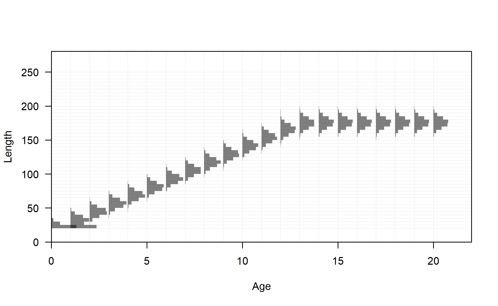
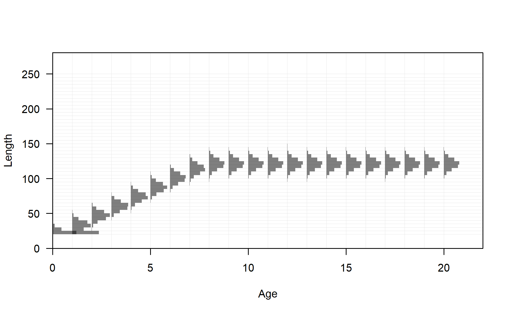

{kind=link}
{kind=link}
{kind=link}
{kind=link}
{kind=link}
{kind=link}
{kind=link}

Weight-length relationship
file: bio5_weightatsize.png
Length at age in the beginning of the year (or season) in the ending year of the model. Shaded area indicates 95% distribution of length at age around estimated growth curve.
file: bio1_sizeatage.png
Length at age (top-left panel) with CV (thick line) and SD (thin line) of length at age shown in top-right and lower-left panels
file: bio2_sizeatage_plus_CV_and_SD.png
Length at age (top-left panel) with weight (thick line) and maturity (thin line) shown in top-right and lower-left panels
file: bio3_sizeatage_plus_WT_and_MAT.png

Distribution of length at age for seas: 1 sub_seas: 1 morph: 1
file: bio1B_len_at_age_matrix_1.png

Distribution of length at age for seas: 1 sub_seas: 1 morph: 2
file: bio1B_len_at_age_matrix_2.png
Distribution of length at age for seas: 1 sub_seas: 2 morph: 1
file: bio1B_len_at_age_matrix_3.png
Distribution of length at age for seas: 1 sub_seas: 2 morph: 2
file: bio1B_len_at_age_matrix_4.png
Weight-length relationship
file: bio5_weightatsize.png
Maturity at length
file: bio6_maturity.png
Fecundity
file: bio7_fecundity.png
Fecundity as a function of weight
file: bio8_fecundity_wt.png
Fecundity as a function of length
file: bio9_fecundity_len.png
Spawning output at length. This is the product of maturity and fecundity unless maturity is age-based, in which case only fecundity is represented.
file: bio10_spawningoutput_len.png
Spawning output at age. This is the product of maturity and fecundity. When these processes are length-based they are converted into the age dimension using the matrix of length at age.
file: bio11_spawningoutput_age.png
{kind=link}
{kind=link}
{kind=link}
{kind=link}
{kind=link}
{kind=link}